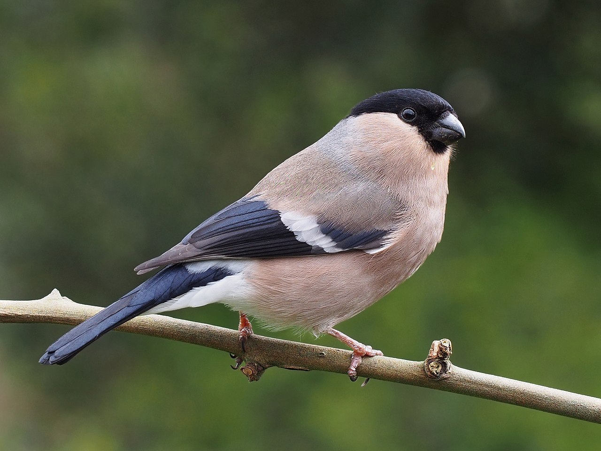

Птица мелких размеров, чуть больше воробья. Голова сверху, вокруг клюва и глаз — чёрная. Маховые и рулевые перья тоже чёрные, с синим металлическим отливом. Поясница и подхвостье — белые. Спина, плечи и зашеек у самца серые. Щёки, шея снизу, брюхо и бока — красные. Тон и интенсивность окраски нижней стороны тела зависит от подвидовой принадлежности и индивидуальных особенностей. Зашеек и плечи самки серые. Спина буровато-коричневая. Щёки, шея снизу, живот и бока — серо-коричневые. Оперение птенцов преимущественно охристо-коричневого цвета. «Чёрной шапочки», как у взрослых особей, на голове у птенцов нет.
